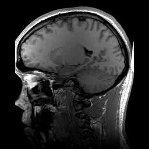

Methods in Human Neuroimaging
NBL 425/625 — Fall Semester 2026
Meetings: Tuesdays and Thursdays, 5:00 PM – 6:15 PM
Location: TBD
An comprehensive overview of human neuroimaging modalities with a focus on research imaging. The course features 14 weeks of content, with 2 lectures and an interactive lab or hands-on session per week. We will explore the physical principles, experimental design, and analytical methods behind modern neuroscience, moving from the foundational physics of magnetic resonance imaging to the cutting edge of clinical applications.
Course Outline
-
Week 01. Introduction & History
Overview of the course and the historical evolution of neuroimaging from early lesion studies to modern imaging modalities.
-
Week 02. Physical Principles of MRI
Nuclear magnetic resonance, static magnetic fields, RF pulses, and gradient fields. How we generate signals from protons.
-

T1-weighted MRI sagittal slice.Week 03. Structural MRI & Contrast
T1, T2, and T2* relaxation. Tissue properties, pulse sequences, and understanding structural brain anatomy in 3D.
-
Week 04. Functional MRI (fMRI)
The BOLD signal, neurovascular coupling, and the physiological basis of functional neuroimaging.
-
Week 05. fMRI Experimental Design
Block vs. event-related designs, general linear model (GLM), preprocessing steps, and statistical inference.
-
Week 06. Diffusion Tensor Imaging (DTI)
Measuring water diffusion in the brain, fractional anisotropy, and reconstructing white matter tracts (tractography).
-
Week 07. Positron Emission Tomography
Radioisotopes, tracers, and metabolic imaging. Applications in neurodegenerative diseases and receptor mapping.
-
Week 08. Electroencephalography (EEG)
Measuring electrical potentials, event-related potentials (ERPs), and analyzing neural oscillations and frequency bands.
-
Week 09. Magnetoencephalography (MEG)
Detecting magnetic fields generated by neural activity. Source localization techniques and the inverse problem.
-
Week 10. Functional NIRS (fNIRS)
Near-infrared spectroscopy, measuring hemodynamic responses non-invasively, and applications in naturalistic environments.
-
Week 11. Magnetic Resonance Spectroscopy
Measuring chemical metabolites in vivo (e.g., GABA, Glutamate). Principles of chemical shift and spectral editing.
-
Week 12. Multi-modal Integration
Combining modalities (e.g., EEG-fMRI, PET-MR) to leverage temporal and spatial resolution advantages simultaneously.
-
Week 13. Emerging Modalities
Optically Pumped Magnetometers (OPM-MEG), high-field MRI (7T+), and the cutting edge of neuroimaging research.
-
Week 14. Future & Final Projects
The future of neuroimaging, machine learning applications, and final student project presentations.